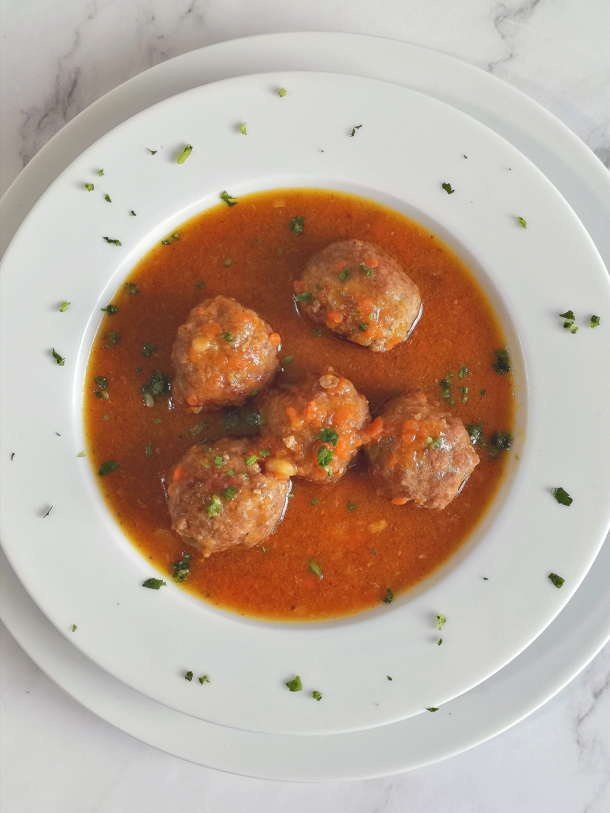

Risotto al Roquefort
Ingredientes
Para una persona
1 pocillo (tamaño café) de arroz arborio
1 cda de aceite
1/4 cebolla chica
1/4 de caldo en cubo disuelto
en 1 tz de agua hirviendo
50 gr de roquefort
10 gr de manteca
pimenton dulce
pimienta
1 cda grande queso rallado
1cdita de ralladura de limon
(preferentemente lima)
Procedimiento
1. Saltear la cebolla con el aceite hasta que este dorada, agregar el arroz y revolver hasta que se integre todo.
2. Agregar el caldo, el roquefort, pimenton y pimienta
3. Ir revolviendo cada tando hasta que pasen 15 minutos, agregar agua si es necesario
4. Agregar la manteca y el queso rallado, revolver, probar el punto del arroz y apagar el fuego
5. dejar reposar dos tres minutos y servir
Risotto con Mariscos

Ingredientes
Para una persona
1 pocillo (tamaño café) de arroz arborio
1 cda de aceite
1/4 cebolla chica
1/4 de caldo en cubo disuelto
en 1 tz de agua hirviendo
50 gr mariscos
10 gr de manteca
pimenton dulce
pimienta
1 cda grande queso rallado
1cdita de ralladura de limon
(preferentemente lima)
Procedimiento
1. Saltear la cebolla con el aceite hasta que este dorada, agregar el arroz y revolver hasta que se integre todo.
2. Agregar el caldo, los mariscos, pimenton y pimienta
3. Ir revolviendo cada tando hasta que pasen 15 minutos, agregar agua si es necesario
4. Agregar la manteca y el queso rallado, revolver, probar el punto del arroz y apagar el fuego
5. Dejar reposar dos tres minutos y servir
Risotto con Hongos

Ingredientes
Para una persona
1 pocillo (tamaño café) de arroz arborio
1 cda de aceite
1/4 cebolla chica
1/4 de caldo en cubo disuelto
en 1 tz de agua hirviendo
1/4 taza de hongos disecados o champignones
20 gr de manteca
pimenton dulce
pimienta
1 cda grande queso rallado
1cdita de ralladura de limon
(preferentemente lima)
Procedimiento
1. Hidratar los hongos con agua unas horas antes, lavar y descartar el agua
2. Saltear la cebolla con el aceite hasta que este dorada, agregar el arroz y revolver hasta que se integre todo.
3. Agregar el caldo, los hongos o champignones cortados en láminas, pimenton y pimienta
4. Ir revolviendo cada tando hasta que pasen 15 minutos, agregar agua si es necesario
5. Agregar la manteca y el queso rallado, revolver, probar el punto del arroz y apagar el fuego
6. Dejar reposar dos tres minutos y servir
Garam masala

Ingredientes
Para una persona
1 pocillo (tamaño café) de arroz basmati
1 pechuguita de pollo
1 cda de aceite
1/4 cebolla chica
1/4 de caldo en cubo disuelto
en 1/2 tz de agua hirviendo
1/2 yogurth natural
1 cdita de garam masala
pimenton dulce
1 cdita de maizena disuelta en un pocillo de leche
10 gr de manteca
Procedimiento
1. Reogar la cebolla en aceite, agregar el garam masala y el pimenton, revolver
1. Agregar el pollo cortado en cubos, saltear hasta que este dorado
2. Agregar el caldo disuelto en agua hasta cubrir el pollo
3. Cocinar 10 minutos
4. Agregar el yogurth y la leche con la maizena
5. Cocinar 5 minutos mas, revolver. Va a ir espesando
6. En una olla aparte hervir agua, agregar el arroz y cocinar entre 10 y 15 minutos, probar que este blando
7. Colar el arroz, agregar la manteca.
8. Servir el garan masalla con el arroz
Arroz con albondigas
Ingredientes
Para 4 persona
1/2 kg de carne picada especial
1 huevo
2 cda de provenzal
sal
harina cantidad necesaria
1 lata de tomates
1 cda de aceite de oliva
3 pocillos de arroz grano corto
10 gr de manteca
Procedimiento
1. En un bowl batir el huevo con provenzal y sal
1. Agregar la carne picada, mezclar bien con la mano
2. Colocar harina en las manos e ir formando bolitas del tamaño de una nuez
3. Se pueden congelar
4. En una sarten colocar el aceite y el tomate desmenuzado
5. Comenzar a cocinar y agregar las albondigas
6. Ir girandolas para que se cocinen
7. Cocinar un rato la salsa con las algondigas, agregar agua de ser necesario
8. Hervir el arroz 10 minutos
9. Colar, agregar la manteca
10. Servir el arroz y encima las albondigas con la salsa
Guiso de lentejas
Ingredientes
Para 6 u 8 personas
500 gr de lentejas
1 chorizo colorado o candelario
200 gr de panceta ahumada
3 rodajas de zapallo
1 lata de tomate
1 caldo en cubos
Procedimiento
1. En olla grande colocar las lentejas (no es necesario remojar)
1. Agregar el zapallo cortado en cubos, el chorizo y la panceta en cubos chiquitos.
2. Agregar el tomate triturado, el caldo triturado y agua hasta cubrir las lentejas.
3. Cocinar a fuego lento.
4. Ir revolviendo y agregando agua si es necesario.
5. Esta listo cuando las lentejas y el zapallo estan blandos, si el zapallo se desarma mejor.